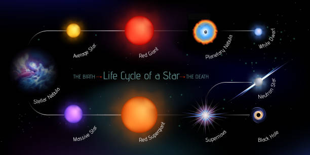

Mi az a csillag?
A csillag egy izzó gázgömb, amelyet a belsejében zajló fúziós reakciók tartanak életben. A Nap is egy közönséges csillag. A csillagok tömege, színe és életciklusa különböző lehet.

Csillagok életútja
A csillagok születése hatalmas gáz- és porfelhőkből indul, amit gravitáció húz össze. Életük során különböző fázisokon mennek keresztül: fősorozat, vörös óriás, fehér törpe, szupernehéz csillagok, neutroncsillag vagy fekete lyuk – a tömegüktől függően.

Galaxisok
A galaxisok csillagok, por és gáz hatalmas halmazai, amelyeket gravitáció tart össze. A legismertebb a Tejútrendszer, amelynek része a Naprendszer is. Léteznek spirál-, elliptikus és szabálytalan galaxisok.